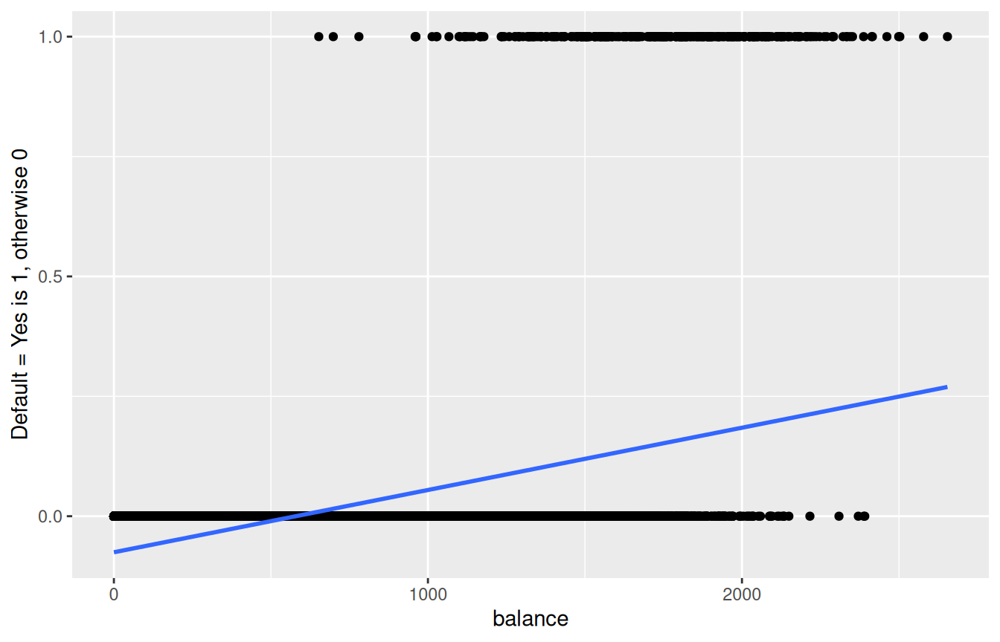
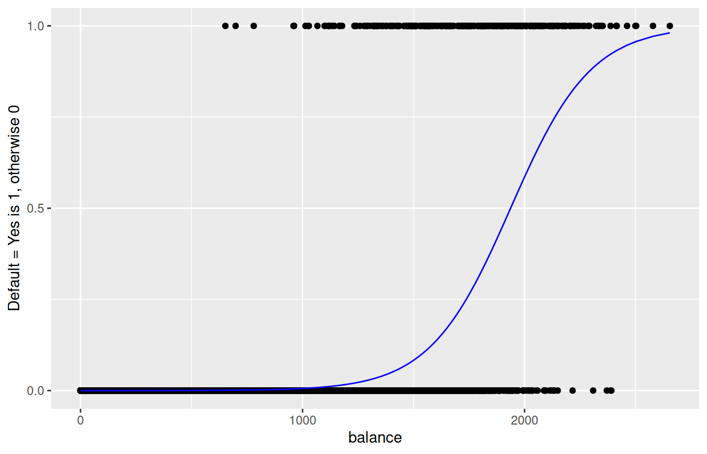

4 Logistic Regression and KNN Classifiers
4.1 K-Nearest Neighbors Regression
Non-parametric approach
Given a value for \(K\) and a test data point \(x_0\),
\[\hat{f}(x_0)=\dfrac{1}{K} \sum_{x_i \in \mathcal{N}_0} y_i=\text{Average} \ \left(y_i \ \text{for all} \ i:\ x_i \in \mathcal{N}_0\right) \]
where \(\mathcal{N}_0\) is known as the neighborhood of \(x_0\).
- The method is based on the concept of closeness of \(x_i\)’s from \(x_0\) for inclusion in the neighborhood \(\mathcal{N}_0\). Usually, the Euclidean distance is used as a measure of closeness. The Euclidean distance between two \(p\)-dimensional vectors \(\mathbf{a}=(a_1, a_2, \ldots, a_p)\) and \(\mathbf{b}=(b_1, b_2, \ldots, b_p)\) is
\[||\mathbf{a}-\mathbf{b}||_2 = \sqrt{(a_1-b_1)^2 + (a_2-b_2)^2 + \ldots + (a_p-b_p)^2}\]
4.2 K-Nearest Neighbors Regression (multiple predictors)
It is important to scale (subtract mean and divide by standard deviation) the predictors when considering KNN regression so that the Euclidean distance is not dominated by a few of them with large values.
4.3 Linear Regression vs K-Nearest Neighbors
| Linear Regression | KNN Regression | |
|---|---|---|
| Type | ||
| Task | ||
| Predictive Performance | ||
| Interpretability | ||
| Other |
4.4 Classification Problems
Response \(Y\) is qualitative (categorical).
The objective is to build a classifier \(\hat{Y}=\hat{C}(\mathbf{X})\) that assigns a class label to a future unlabeled (unseen) observation and understand the relationship between the predictors and response.
There can be two types of predictions based on the research problem.
Class probabilities
Class labels
4.5 K-Nearest Neighbors Classifier
Given a value for \(K\) and a test data point \(x_0\), \[P(Y=j | X=x_0)=\dfrac{1}{K} \sum_{x_i \in \mathcal{N}_0} I(y_i = j)\]
where \(\mathcal{N}_0\) is known as the neighborhood of \(x_0\).
For classification problems, the predictions are obtained in terms of majority vote (unlike in regression where predictions are obtained by averaging).
Let’s implement this classifier in R.
4.6 Logistic Regression
A logistic regression classifier is a common ML model for binary classification problems. It assumes a functional form of the relationship between the response and the predictors.
Consider a one-dimensional two-class problem.
Transform the linear model \(\beta_0 + \beta_1 \ X\) so that the output is a probability.
Use logistic or sigmoid function \[g(t)=\dfrac{e^t}{1+e^t} \ \ \ \text{for} \ t \in \mathcal{R}\]
Suppose \(p(X)=P(Y=1|X)\). Then, \[p(X)=g\left(\beta_0 + \beta_1 \ X\right)=\dfrac{e^{\beta_0 + \beta_1 \ X}}{1+e^{\beta_0 + \beta_1 \ X}}\]
\(e \approx 2.71828\) is a mathematical constant (Euler’s number).
\(\log \left(\dfrac{p(X)}{1-p(X)}\right) = \beta_0 + \beta_1 \ X\)
Let’s implement this model in R.
4.7 Why Not Linear Regression?
Default dataset
Linear regression does not model probabilities well. Linear regression might produce probabilities less than zero or bigger than one.
4.8 Logistic Regression
Default dataset

4.9 Why Not Linear Regression?
Suppose we have a response \(Y\),
Linear regression suggests an ordering, and in fact implies that the difference between stroke and drug overdose is the same as between drug overdose and epileptic seizure.
4.10 Logistic Regression: Predictions and Interpretation
Default dataset
For balance=$700,
\[\hat{p}(X)=\dfrac{e^{b_0+b_1 X}}{1+e^{b_0+b_1 X}}=\dfrac{e^{-10.68 + (0.005516 \times 700)}}{1+e^{-10.68 + (0.005516 \times 700)}}=0.0011\]
Interpretations: A positive \(\hat{\beta}_1\) indicates that a higher balance is associated with a larger log odds of default, in other words, a higher probability of default. However, the change in the probability of default due to a one-unit change in balance depends on the current balance value.
4.11 Logistic Regression vs K-Nearest Neighbors
| Logistic Regression | KNN Classifier | |
|---|---|---|
| Type | ||
| Task | ||
| Predictive Performance | ||
| Interpretability | ||
| Other |
4.12 Model Assessment: Confusion Matrix
| Actual Positive/Event | Actual Negative/Non-event | |
|---|---|---|
| Predicted Positive/Event | ||
| Predicted Negative/non-event |
4.13 Model Assessment: ROC Curve
A Receiver Operating Characteristic curve, or ROC curve, is a graphical plot that illustrates the performance of a binary classifier model at varying threshold values.
The ROC curve with the pROC package in R plots sensitivity (recall) along the vertical y-axis and specificity along the horizontal x-axis.
The closer the curve hugs the upper left-hand corner, the better is the performance of the classifier. AUC refers to the Area Under this Curve.